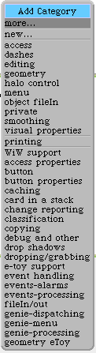
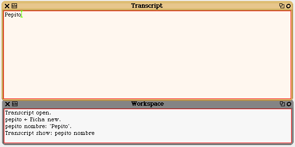
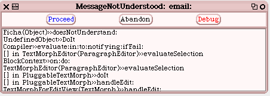
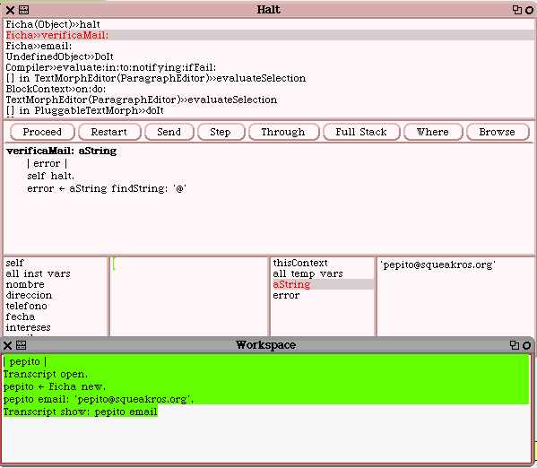

Ejercicios2002
Como parte del trabjo de este año, comenzaremos un pequeño proyecto.
Lo denominaremos PrimerEjercicioParaIndividuosTodoObjeto o Pepito.
Asuimiremos conocimientos mínimos de Smalltalk/Squeak.y un pensamiento mas "estructurado" que "objeto".
Tambien haber leído el tutorial de IBM o poseer una leve experiencia,
Primera Etapa
Utilización del Workspace, Browser y Transcript
Queremos realizar un "data entry" sencillo, que nos permita utilizar el Squeak para mantener las fichas de nuestro miembros.
La información que nos interesa es el nombre, dirección, teléfono, fecha de nacimiento, intereses.
Crear una categoría Ejercicicios2002, como se ve anteriormente.
Object subclass: #Ficha
instanceVariableNames: 'nombre direccion telefono fecha intereses '
classVariableNames: ''
poolDictionaries: ''
category: 'Ejercicios2002'
Dentro de esta categoría, crear una clase denominada ficha.
Conviene utilizar algún esquema organizado de categorías de métodos, como se vio en el juego de los animales.
Si nos inspiramos en la categoría morph del Squeak 3.2 vemos lo siguiente:
No siempre podremos utilizar estas categorías y podemos crear las nuestras, pero tratemos de ajustarnos a este tipo de vocabulario común.
Podemos utilizar access para el ingreso y recuperación de los valores de las variables de instancia
Utilizando el mismo código del juego de los animales
nombre:unaCadena
“Inicializa el nombre del receptor a unaCadena”
nombre := unaCadena

Aqui vemos la ejecución de este método..
Pero si remarcamos nombre y lo reemplazamos por email, al ejecutar aparece
Aquí hacemos una pausa.
Nos ponemos de pie y repetimos cinco veces.
"he conocido a mi mejor amigo, el debugger".
Vemos de la primera línea que nuestro objeto Ficha no comprende el mensaje email.
En este momento nos hemos dado cuenta que no tenemos como guardar email.
Si vamos a la definicion de clase y agregamos email, al aceptar nos sale un mensaje informando que el sistema recompila Ficha.
También debemos agregar jun metodo similar al anterior, en realidad podemos copiar y pegar reemplazando nombre por la variable deeada, en nuestro caso email.
Pero para empezar a entender porqué nuestro "enamoramiento" con Squeak, mejoremos el código para validar que el texto ingresado contenga una arroba @
verificaMail: aString
self halt. "Magia, acá aparecerá nuesto amigo el debugger"
email: aString
self verificaMail: aString. "self significa que el mensaje será
interpretado por la misma clase "
email _ aString
Luego de ejecutar lo que se ve en el workspace, al aparecer nuestro amigo pulsar debug y marcar como se ve en el dibujo

Si todo ha ido bien , el sistema queda en el halt del método verificaMail: aquí podemos ver los contenidos de las variables, como se ve para la cadena ingresada.
Pulsamos Step y se remarcará findString: '@'
Pulsamos Send y podremos seguir el envío del mansaje findString: '@' al objeto aString.
findString: subString
"Answer the index of subString within the receiver, starting at start.
If
the receiver does not contain subString, answer 0."
^ self findString: subString startingAt: 1
Sucesivos Step y Send e ir mirando que valores se van guardando en los distintos objetos
En nuestro caso en error se guardará 7.
Si prosiguieramos con Proceed, haría todos los pasos y no veríamos nada que nos indique si hubo o no error.
Como cuando no encuentra la arroba en error queda un cero, podemos hacer que salga un cartel que diga que no econtró la arroba.
Si cuiando entra al debug, dentro del mismo agregamos el siguiente código y aceptamos,
error = 0
ifTrue: [PopUpMenu inform: 'No encontró una arroba ']
Además le podemos cambiar el contenido al objeto, haciendo lo que no se debe de manera que en el panel quede
aString 'pepitosqueakros.org'
Dentro del debug hacemos Restart. Naturalmente si el texto tiene arroba no sale ningún cartel.
Y vemos como nuestro pobre pepito sobrevive a estas herejías, mostrando correctamente el carterl